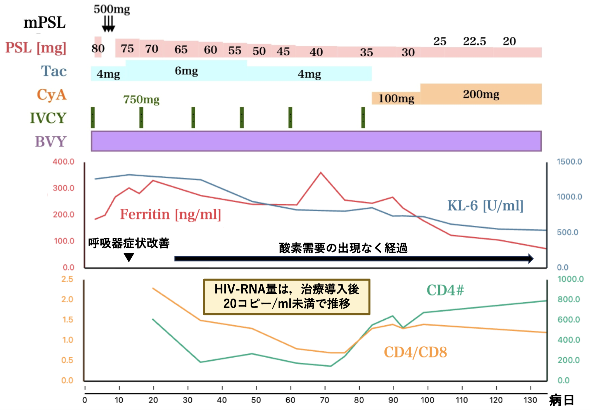

検査値から処方、イベントまで、
CSVをアップロードすれば瞬時にプロット。
面倒な手入力から解放されます。
処方の漸減、イベントマーカー、任意の位置へのテキスト配置。
漏れなく入院経過を表現できます。
拡大しても美しさを損なわないSVG出力。
PowerPointでの微調整もシームレス。
論文投稿にも最適です。

10 MINS.
Average Creation Time
検査値、処方、イベント。お持ちのCSVデータを読み込ませるだけ。自動的に時間軸が設定されます。
項目の並び替えやグラフの表示範囲の調整を直感的に。一時保存機能で、後からの再開もスムーズです。
フォント、カラー、サイズ。発表のスタイルに合わせて一括設定。
プレゼンの質を引き上げます。
JPEGまたはSVG形式でエクスポート。学会スライド、論文、カンファレンス。あらゆるシーンに対応します。